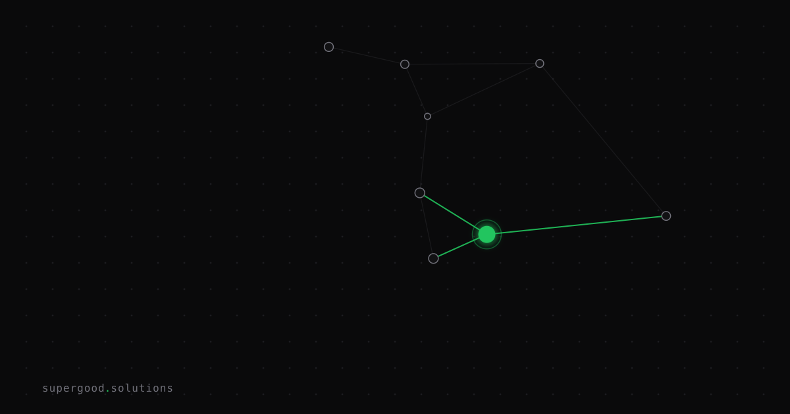

The Capability-Reliability Gap Is Your Real Agent Risk
TL;DR: An agent that completes a task 80% of the time is not 80% deployed — it's a liability waiting to detonate in production. Before any agent touches a real workflow, you need to quantify the failure distribution, not just the average accuracy.
Key Insight
Here's what the vendors won't put in their demo: accuracy and reliability are not the same curve, and they don't improve at the same rate.
Arvind Narayanan and Sayash Kapoor — the researchers behind the book AI Snake Oil — published a paper called Towards a Science of AI Agent Reliability that makes this explicit. Their finding: while model accuracy has improved rapidly over the last few years, reliability has improved only slightly. The gap is widening, not closing.
They break reliability into four dimensions that accuracy scores completely ignore:
- Consistency — does the agent get it right every time, or just sometimes? Across models tested, consistency scores range from 30% to 75%. That means the same agent, given the same task, fails on half its runs even when it "knows" how to do it.
- Robustness — rephrasing the same instruction with identical semantic meaning causes performance to drop substantially. Your test harness doesn't catch this because your test harness uses the exact same phrasings every time.
- Predictability — does the agent know when it's uncertain? Across all models tested, this is the weakest dimension. Agents' confidence signals correlate poorly with actual correctness. Most models cannot distinguish their correct predictions from their wrong ones.
- Safety — when failures happen, are they recoverable? Not always.
The compound math makes this concrete. Dynatrace CTO Bernd Greifeneder demonstrated at Perform 2026: an agent running at 95% per-step accuracy drops to roughly 60% success by step ten of a chained workflow. Most production agent workflows chain 5–12 steps. At that range, you're looking at end-to-end success rates of 54–77% for an agent that individually benchmarks well.
That's not 80% deployed. That's 1-in-3 tasks silently failing.
Why Teams Miss This
Teams measure capability — can the agent do the task at all? They benchmark on clean data, isolated tool calls, and happy-path prompts. Everything passes. They ship.
Then a Kore.ai survey of 2026 enterprise deployments finds that 71% of organizations are using AI agents in some form, but only 11% have reached production. The gap isn't that the agents can't do the task. It's that they can't do it reliably enough under real conditions.
Real conditions include:
- APIs that rate-limit mid-chain
- Context windows that fill up and cause the model to silently drop tool parameters
- Input distributions that differ from your test set
- The same prompt producing different tool call sequences across runs due to temperature and model version drift
Maxim's production analysis found tool-calling fails 3–15% of the time in production, with tool selection accuracy degrading sharply once an agent has more than seven tools available. None of this shows up in unit-testing individual steps.
The mistake is treating an eval as a pass/fail gate instead of a failure distribution map. Passing your eval means you know the agent can do something. It tells you almost nothing about whether it will do it reliably at scale.
How to Actually Do It
Before any agent touches a production workflow, run a reliability audit across all four dimensions — not just accuracy.
1. Run each eval 10–20 times, not once.
A single pass proves capability. Repeated runs surface consistency. If your agent scores 90% on a benchmark but only gets the same answer consistently 60% of the time, your real reliability ceiling is 60%.
2. Fuzz your prompts.
Rephrase the same task 3–5 ways with identical intent. If accuracy drops more than 10–15 percentage points, you have a robustness problem that will manifest the moment real users write their own prompts instead of yours.
3. Instrument the chain, not just the endpoints.
Log every step, every tool call, and every tool response. Calculate the compound failure rate across your actual workflow length. Use this formula: if per-step accuracy is p and your chain has n steps, end-to-end success rate is roughly p^n. At p=0.95 and n=10, that's 0.60.
# Sanity check your compound failure rate before shipping
def compound_success_rate(per_step_accuracy: float, num_steps: int) -> float:
return per_step_accuracy ** num_steps
# 95% per step, 10 steps
print(f"{compound_success_rate(0.95, 10):.0%}") # → 60%
# What per-step accuracy do you need for 90% end-to-end at 10 steps?
import math
target = 0.90
steps = 10
required = math.exp(math.log(target) / steps)
print(f"Required per-step accuracy: {required:.1%}") # → 98.9%4. Define acceptable failure modes before you define acceptable accuracy.
Ask: when this agent fails, what does it do? Silently skip a step? Hallucinate a result? Retry infinitely? The failure mode distribution is often more important than the failure rate. A 20% failure rate where all failures are detectable and recoverable is safer than a 5% failure rate where 1% are silent corruptions.
5. Set a reliability floor, not just an accuracy floor.
If your workflow requires 90% end-to-end success, back-calculate the per-step accuracy you need at your chain length. Then don't ship until your evals demonstrate that number consistently — across multiple runs, multiple prompt variants, and real-ish data.
What We've Learned
The industry right now is selling capability and calling it reliability. Benchmark scores improve every quarter. Reliability scores — consistency, robustness, predictability — improve slowly and often don't make it into the model cards at all.
The practical move: treat every agent deployment like a reliability engineering problem, not a capability proof. Your eval suite should measure what the agent does when conditions are imperfect, not just whether it can do the task under ideal conditions.
If you can't characterize the failure mode distribution, you don't know enough to ship.
Sources
- Towards a Science of AI Agent Reliability (Narayanan, Kapoor, Rabanser, 2026)
- Blake Rain's notes on the paper
- AI Agent Production Issues in 2026: Reliability, Hallucinated Actions, and the Monitoring Gap
- Kore.ai Enterprise AI Agents Survey 2026
- Top 6 Reasons AI Agents Fail in Production (Maxim)
- AI Snake Oil (Narayanan & Kapoor)